%%{
init: {
'theme': 'dark',
'themeVariables': {
'primaryColor': '#16080f',
'primaryTextColor': '#fff',
'primaryBorderColor': '#16080f',
'background': '#16080f'
}
}
}%%
flowchart LR
subgraph T1[Zaplanuj swoją przyszłość na IGP]
click T1 "https://sylabusy.agh.edu.pl/pl/1/2/19/1/4/7/232" _blank
%% Wprowadz nazwe przedmiotu zamiast słowa "kierunkowy" itd.
%% wybieraj przedmioty z listy dostepnej w systemie sylabus
S3:::S
S3 --- S3K1("Kierunkowy"):::kier
S3 --- S3I1>InfoTools]:::tool
S4:::S
S4 --- S4I1([Informatyczny]):::info
S4 --- S4T1>InfoTools]:::tool
S5:::S
S5 --- S5K1(Kierunkowy):::kier
S5 --- S5I1([Informatyczny]):::info
S5 --- S5T1>InfoTools]:::tool
S6:::S
S6 --- S6K1(Kierunkowy):::kier
S6 --- S6I1([Informatyczny]):::info
S6 --- S6T1>InfoTools]:::tool
S7:::S
S7 --- S7K1(Kierunkowy):::kier
S7 --- S7K2(Kierunkowy):::kier
S7 --- S7I1([Informatyczny]):::info
S7 --- S7I2([Informatyczny]):::info
S7 --- S7T2>InfoTools]:::tool
S7 --- S7T1>InfoTools]:::tool
end
S3{S3} ==> S4{S4} ==> S5{S5} ==> S6{S6} ==> S7{S7}
classDef red fill:#00000, font-size:35px, background:#0000
class T1 red
classDef S fill:#0, color:#fff, font-size:20px
classDef kier fill:#830f0f, color:#fff
classDef info fill:#1c3e0b, color:#fff
classDef tool fill:#052340, color:#fffWprowadznie
Już za kilka dni rozpoczną się zapisy na fakultety na kierunku IGP. Postanowiłem krótko wyjaśnić jak została skonstruowana obieralność przedmiotów na tym kierunku. Jest to zupełnie nowe podejście, które zwiększa szanse otwarcia przedmiotów mniej popularnych.
Ogólny zarys
Na poniższej grafice przedstawiłem obieralność przedmiotów w poszczególnych semestrach. Już na 2 semestrze studiów musisz podjąć decyzję, jak kształtować tok nauczania. Zauważ, że masz 3 bloki obieralne.
- Kierunkowy 5x
- Informatyczny 5x
- InfoTolls x6
W każdym z tych bloków masz pewną pulę przedmiotów. W efekcie ten sam przedmiot z danej puli może otworzyć się na rożnych semestrach. Mało tego, od przyszłego roku zapisywać się będziecie mogli wspólnie na przedmioty z studentami z roku niżej. To zwiększa szanse otwarcia fakultetów, gdy jest małe zainteresowanie na roku. np. 5 osób z każdego roku. Warto próbować, jeśli zależy wam na danym module.

MERMAIND
Ten diagram możecie edytować w mermaid live editor. Wystarczy wkleić poniższy kod. Pozmieniać nazwy zgodnie z komentarzem w kodzie możesz zaplanować swoją przyszłość. Warto to przemyśleć.
Pula przedmiotów
W poniższej tabeli znajdziecie obecnie dostępne przedmioty. Informacje szczegółowe o przedmiocie znajdziecie w sylabusach. Zachęcam do kontaktu z prowadzącym jeśli zastanawiacie się, czy to dobry moment na ten przedmiot. Możecie szukać przedmiotów po prowadzących, nazwach i typie modułu.
Warning
Muszę popracować nad kolorami tej tabeli
Moje moduły
Aktualnie dostępne są dwa moje moduły w grupie przedmiotów informatycznych:
- Tworzenie funkcjonalności języków skryptowych
- Zastosowanie danych programu Copernicus
Tworzenie funkcjonalności języków skryptowych - ten moduł przeznaczony jest dla osób, kótre dobrze czują się w R. Na tym modelu nauczysz się pisać zaawansowane i odporne funkcje w filozofii tidyverse, budować pakietów (whole a game) wraz z systemem kontroli wersji GIT, udostępniać pakiet na GithHub (tak by każdy mógł go pobrać i zainstalować), Tworzyć dokumentację i system pomocy oraz stronę internetową pakietu na Github.
Zastosowanie danych programu Copernicus - Kurs dla osób, które znają i lubią R, ale niekoniecznie chcąc programować. Copernicus to olbrzymia baza danych zawierające dane przestrzenne dla całej ziemi, które pozyskiwane są z misji kosmicznych i globalnych modeli. Na wykładach omówimy, zasoby i potencjalne zastosowania. Na warsztatach nauczysz się:
- Automatyzacji - pakiet purrr (szybka i wygodna składnia)
- Automatycznego pozyskiwanie danych poprzez API z Copernicus (zapomnij o klikaniu, to nie dla ciebie)
- Wizualizacja wielowymiarowych zestawów danych przestrzennych (tworzenie animacji - patrz). A na tej stronie znajdują się animacje przygotowane przez studentów.
Pozostałe moduły powiązane z R to przemdioty Zbysia:
- Tworzenie aplikacji internetowych - Jak w tytule, tworzenia aplikacji web w Shiny
- Skryptowe metody analityczne - Zaczniemy klasycznie od regresji, na końcu zatrzymamy się na krok przed poważnym machine learningiem.
- Wizualizacja w Python (niech nazwa waz nie zmyli, python to literówka) - Najpierw plotly i pochodne, a później Tableau i pochodne
- Zasoby i analiza danych środowiskowych - Jak wygląda bajeczny świat danych środowiskowych, będzie głównie woda ale też meteorologia i klimat.
Jak wybierać - czyli ścieżka R4DS&Envi
Obranie właściwego kursu zależny od was i możecie zapisać się na dowolny kurs w dowolnej kolejności.Jednak zalecam zwrócenie uwagi na ten diagram. Napewno będzie łatwiej i prościej przyswajać pewne informacje w określonej kolejności. Nie musicie wybrać wszystkich niżej zdefiniowanych ścieżek, wybierzcie te, którą was interesują i pomogą wam pozyskać cenne kompetencje.
Warning
Poniższą grafikę otwórz w nowej karcie lub pobierz.

Niestety nie wszystkie przedmioty są już dostępne. Mam nadzieję, że w przyszłym roku pojawi się infotools: Zdalne Repozytoria i Systemy Kontroli wersji (Git & github). W dalszej kolejności powinny zostać dodane kursy z zakresu Uczenia maszynowego w R (tzw. filozofia tidymodels) oraz najważniejsza rzecz w uczeniu maszynowym, czyli EMA (Eksploracyjna analiza modelu).